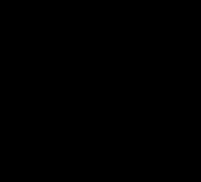
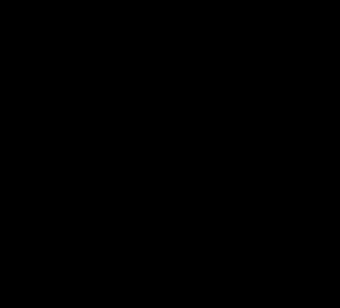

Origine du tapis Sierpinski
Le tapis de Sierpiński (1916), du nom de Wacław Sierpiński, est une fractale obtenue à partir d'un carré. Le tapis se fabrique en découpant le carré en neuf carrés égaux avec une grille de trois par trois, et en supprimant la pièce centrale, et en appliquant cette procédure indéfiniment aux huit carrés restants.

Fonctionnement du tapis de Sierpinski
-
2020 - 2021
Explications:
Ici, nous avons programmé ce motif, afin qu'il fonctionne avec des triangles à la place des carrés.
La premiere fonction "dessiner" attribue à chaque caractère une acction à effectuer, comme tourner ou avancer. La deuxieme fonction "Sierpinski" remplace chaqque caractère "F" et "G", par une chaîne plus grande. "F" est remplacé par "F-G+F+G-F" et "G" est remplacé par "GG".
La function courbeSier associe à une variable "courbe" un motif initial. Pour chaque valeur de niter, la variable nouveauMotif sera associée à la valeur "courbe" de la fonction Sierpinski. "Courbe" deviendra alors la valeur de "nouveauMotif". La dernière fonction, "tapis", prend les valeurs de "motifInitial" et de niter comme paramètres. la variable "courbe" est associée au résultat de la fonction "courbeSier" en fonction des paramètres "motifInitial" et "niter". Enfin, pour les valeurs 0,1 et 2, tapis prend pour valeur "courbe" si "courbe" est supérieur ou égal à "tapis".
Voici une image du tapis de Sierpinski en fonction de niter=2 :

Et voici en fonction de niter=5 :
 
